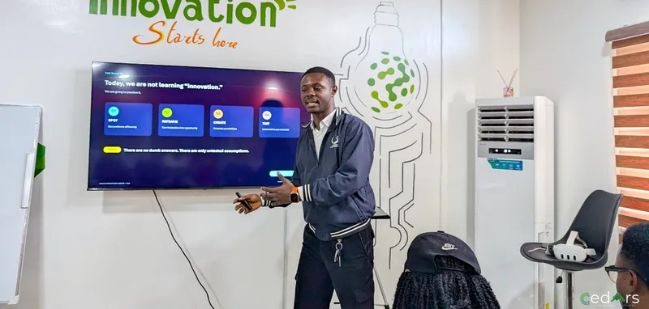
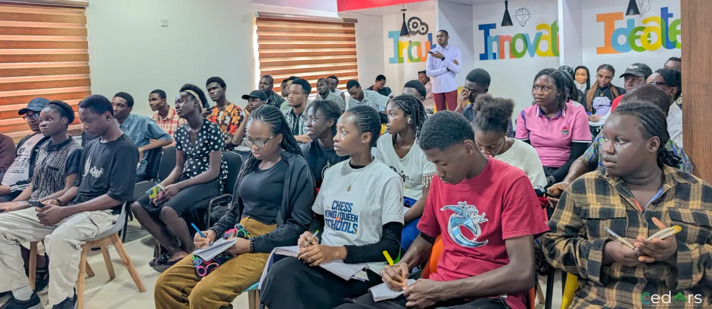
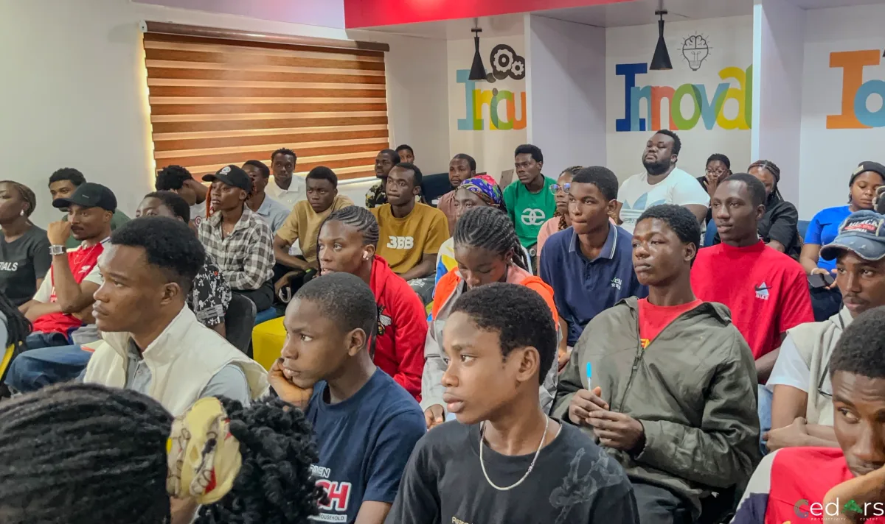
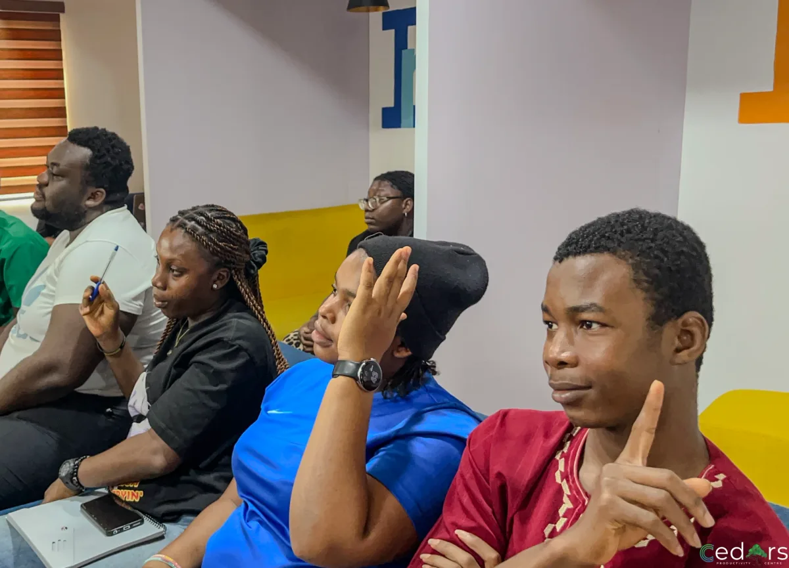

From problems to possibilities
Innovation starts with who has the problem, not with the technology.
Read takeaways →
APPLICATIONS ARE CURRENTLY CLOSED
12 WEEKS · BONNY ISLAND
NO COST TO SELECTED PARTICIPANTS
MENTOR-LED · PROJECT-BASED
EIGHT TRACKS TO CHOOSE FROM
DELIVERED BY CEDARS PRODUCTIVITY CENTRE
Ideas are easy. Building something people come back to is the hard part.

Oluchukwu Okafor opened with a show of hands. Who had ever had an idea for an app, a website or a product? Hands went up. Then he asked people to keep their hands up only if they had built it in front of real users. Some came down.
It’s very easy to have an idea, but it’s hard to actually build out the idea in a way that users actually want to use it.
Building an app used to mean months learning React Native or Kotlin, or paying a developer, then weeks waiting for a first version. Now you describe what you want in plain language, and AI builds something that works, right?
Yet most people still use the same products. “There’s no new chat app that most people use other than WhatsApp,” he said. If building is this easy, where are the new products people use every day?
He pointed to three marks of a good product:
AI has mostly handled the last one. Craigslist looks plain, but lots of people use it, and it makes millions of dollars a year because it solves a problem people have.
AI can’t understand your specific users. This is especially true in Africa, because most of the data used to train it didn’t come from our countries. It can’t decide what matters in your context, and it can’t tell whether the product works for the people you’re building for.
Think of AI as an amplifier. It’s amplifying what is already there, but it’s not replacing it.
Ideas are easy. Built things are not.
Building has never been cheaper, and yet few new products are the ones people reach for every day.
AI amplifies, it doesn’t replace.
It can’t understand your users, and most of its training data didn’t come from our countries.
Define the problem before you build.
Who is struggling, with what, in what situation, what causes it, and what they currently do about it.
Most people start building before they know what they’re solving or what success looks like. He compared two problem statements.
Vague: people need a better way to save money.
Precise: young workers paid monthly run out of money by week three because they can’t see where it went.
The second one tells you these are salaried workers. It tells you the solution should work in weeks, not years. And it tells you the real problem is that they can’t see their spending.
His template asks five things:

AI can make you think you can work alone. Oluchukwu disagreed. A partner keeps you to your deadlines because “most people are more willing to disappoint themselves than others.” Other people catch what you missed and cover the skills you lack.
Avoid relationships where only one person benefits. Don’t chase established founders on LinkedIn, who are unlikely to have time for you. Look for people at your level, heading the same way, with skills different from yours. Classmates, meetups, hackathons and online communities are good places to start. Agree up front on the timeline, weekly check-ins, rules and what each person gets.
The first idea you have in mind is not necessarily the best one.
Write down ten or more ideas without judging them, wild and boring alike. Then score them, for example on impact, ease and confidence. Write the scores down so you can compare them with what actually happens.
Then set a deadline, because work fills the time you give it.
A prototype can be a clickable mockup or a one-page website. It only has to be something people can try. When you test, give people a task and watch without guiding them. If you have to explain everything, it isn’t user-friendly yet. Ask open questions such as “What did you expect to happen?” so people don’t tailor their answers to what they think you want.
Also make sure to set your success criteria before testing. For a class calendar app, you should ask questions such as: can testers add a deadline without help? Do they use it again without being prompted? Do they share it with their class?
If the results meet your criteria, build a fuller product. If not, sharpen the problem and go round again. AI has made starting over much easier.

First, building is a loop. Your first loop will be slow, messy and uncertain. By the fifth, you ask better questions. By the tenth, you go through the process faster. Oluchukwu once built a Sudoku solver that wasn’t successful at first, but it taught him search algorithms he later used to build a chess engine. “Failure is like a teacher to you,” he said.
Second, climb Jacob’s Ladder. Builders need to move between big ideas and implementation details. AI keeps you at the level of ideas, but to use it well, you need the details too. He suggested doing some projects manually, some with AI and some with both, the same way you learn mental maths before you use a calculator. If you rely on AI for everything, you never learn the details. Refusing to use it out of pride is also a mistake.
Third, treat life as a search space. If you lose your key, you don’t check under the bed and give up. Each failed attempt rules out a place to look.
Notice: what idea have I had that I’ve never put in front of a real user?
Choose: write the problem precisely, naming who struggles and what causes it.
Act: set a deadline, then put a rough prototype in front of three people this week.
At your next check-in, ask: did I watch someone use it without explaining it to them?
The four Cohort 2 teams are already working on a version of this. Each team picks a sector, community or organisation, finds a problem and builds a solution. His advice to them was to talk to the people you’re solving for before you decide what the problem is, then check your definition with them. “Most people are nice, so they don’t bite.”